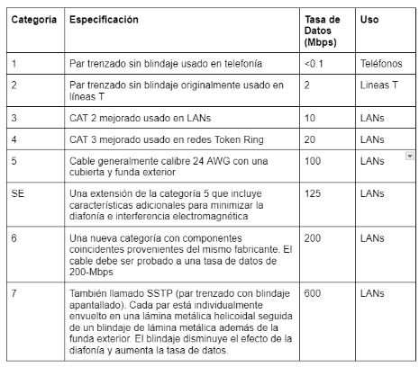
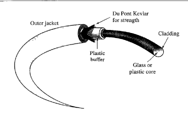

## Medios de Transmisión se define en terminos generales como cualquier cosa que pueda llevar informacion desde una fuente a unn destino Por ejemplo: <br> -El medio de trasmicion para dos personas que conversan es el aire, ya qiue puede transmitir un me
En telecomunicaciones, los medios de transmicion se pueden dividir en dos grandes categorias los medios guiados incluyenel cable de par trenzado, el cable coaxial y el cable de fibra optica ,el medio no guiado es el espacio libre <BR> -GUIADOS <BR> -NO GUIADOS
## Medios Guiados Los medios guiados, como el cable de par trenzado, coaxial y fibra óptica, dirigen las señales dentro de sus límites físicos. <br> Los cables de cobre (par trenzado y coaxial) transportan señales eléctricas, mientras que la fibra óptica transporta señales de luz.
## Cable de par trenzado Un par trenzado consta de dos conductores (normalmente cobre), cada uno con su propio aislamiento plástico, trenzados entre sí <br> Uno de los cables se utiliza para llevar señales al receptor y el otro se utiliza únicamente como referencia de tierra. El receptor utiliza la diferencia entre los dos.
##### Cable de par trenzado sin blindaje <br> frente a cable de par trenzado blindado El cable de par trenzado más común que se utiliza en las comunicaciones se denomina par trenzado sin blindaje (UTP). <br> El cable STP tiene una lámina metálica o una malla trenzada que recubre cada par de conductores aislados. Aunque la cubierta metálica mejora la calidad del cable al evitar la penetración de ruido o diafonía, es más voluminosa y más cara
## UDP Y STP El conector UTP más común es el RJ45 (RJ significa conector registrado), como se muestra en la Figura 7.5. <br> Por otro lado, el cable de par trenzado blindando (STP)tiene una cubierta metálica que mejora la calidad al reducir el ruido y la diafonía, pero es más voluminoso y costoso, es desarrollada por IBM
## categorias 
## CONECTOR RJ45 El RJ45 es un conector codificado, lo que significa que el conector se puede insertar de una sola manera.
Una forma de medir el rendimiento de un cable de par trenzado es comparar la atenuación con la frecuencia y la distancia. Un cable de par trenzado puede transmitir una amplia gama de frecuencias. <br> Sin embargo, la Figura 7.6 muestra que, al aumentar la frecuencia, la atenuación, medida en decibeles por kilómetro (dB/km), aumenta drásticamente con frecuencias superiores a 100 kHz. Tenga en cuenta que el calibre es una medida del grosor del cable.
<br> Para la aplicacion los cables de par trenzado son comunes en líneas telefónicas para voz y datos, así como en conexiones DSL de alta velocidad. <br> tambien utilizadas en redes de area local como 10Base-T y 100Base-T.
## CONECTOR RJ45 El RJ45 es un conector codificado, lo que significa que el conector se puede insertar de una sola manera.
## Cable Coaxial El cable coaxial, o coax, transporta señales de alta frecuencia. Tiene un conductor central de cobre (sólido o trenzado) rodeado de una funda aislante, <br> un conductor exterior metálico (lámina, trenza o ambos) que protege contra el ruido y completa el circuito, y una cubierta de plástico exterior.
### Normas de cable Coaxial Los cables coaxiales se clasifican según el número RG, que define especificaciones como <br> el calibre del conductor,tipo de aislante, blindaje y cubierta, adaptando cada tipo a funciones especializadas.
## Conectores del cable coaxial El tipo de conector más común que se utiliza en la actualidad es el conector Bayone-Neill-Concelman (BNC). <br> 1. El conector BNC se utiliza para conectar el extremo del cable a un dispositivo, como un televisor. <br> 2. El conector BNC T se utiliza en redes Ethernet <br> para derivar la señal a una computadora u otro dispositivo. <br> 3. El terminador BNC se utiliza en el extremo del cable para evitar la reflexión de la señal.
Como se puede observar La Figura muestra tres tipos populares de estos conectores: el conector BNC, el conector BNC T y el terminador BNC. <br> El conector BNC se usa para conectar dispositivos, El conector BNC en T se utiliza en redes Ethernet para conexiones adicionales. El terminador BNC se coloca al final.
## El cable coaxial permite transmitir señales de alta frecuencia y tiene un mayor ancho de banda en comparación con el cable de par trenzado. <br> <br> El cable coaxial ofrece alto ancho de banda, pero con mayor atenuación que el cable de par trenzado, lo que requiere repetidores en largas distancias.
## FIBRA OPTICA <br> La fibra óptica, hecha de vidrio o plástico, transmite señales como luz. La luz viaja en línea recta en un medio uniforme, pero cambia de dirección al pasar a una sustancia con distinta densidad.
La Figura ilustra cómo un rayo de luz se desvía al pasar de un medio más denso a uno menos denso. <br> ya que es el angulo en el que viaja por la trayectoria de esta y la densidad del material
## Modos de Propagacion La tecnología actual admite dos modos (multimodo y monomodo) para propagar la luz a lo largo de canales ópticos, cada uno de los cuales requiere fibras con características físicas diferentes. <br> El modo multimodo se puede implementar en dos formas: índice escalonado o índice graduado
Multimodo El multimodo se denomina así porque varios haces de una fuente de luz se mueven a través del núcleo en diferentes trayectorias. <br> La forma en que estos haces se mueven dentro del cable depende de la estructura del núcleo
##### tipos de fibras Las fibras ópticas se definen por la relación entre el diámetro de su núcleo y el diámetro de su revestimiento, ambos expresados en micrómetros. <br> <br> ### Compocision del cable  <br>
### Conectores de Fibra optica El conector de canal de abonado (SC) se utiliza para televisión por cable. Utiliza un sistema de bloqueo de empujar/tirar. El conector de punta recta (ST) se utiliza para conectar el cable a dispositivos de red. <br> Utiliza un sistema de bloqueo de bayoneta y es más confiable que el SC. MT-RJ es un conector que tiene el mismo tamaño que el RJ45.
#### Aplicacion El cable de fibra óptica se utiliza a menudo en redes troncales porque su gran ancho de banda es rentable. <br> Hoy en día, con la multiplexación por división de longitud de onda (WDM), podemos transferir datos a una velocidad de 1600 Gbps <br>
##### 1. ventajas "FIBRA OPTICA" * Mayor ancho de banda y tasas de datos. * Inmunidad a interferencias electromagnéticas. * Peso ligero en comparación con cables de cobre. * Mayor seguridad contra intercepciones o escuchas. ##### 2. desventajas * Instalación y mantenimiento especializados requeridos. * Propagación unidireccional (se necesitan dos fibras para comunicación bidireccional). * Mayor costo del cable y sus interfaces lo que puede no ser rentable en aplicaciones de baja demanda.
##### MEDIOS NO GUIADOS "INALAMBRICOS" Los medios no guiados transportan ondas electromagnéticas sin utilizar un conductor físico. <br> Este tipo de comunicación se conoce a menudo como comunicación inalámbrica. Las señales se transmiten normalmente a través del espacio libre y, por lo tanto, están disponibles para dispositivos capaz de recibirlas. <br> <img src="imagenes/17.png" alt="">
#### METODOS DE PROPAGACION * Propagación terrestre: Las ondas de baja frecuencia siguen la curvatura de la Tierra, viajando cerca de la superficie. * Propagación en el cielo: Ondas de frecuencia media se reflejan en la ionosfera, permitiendo cubrir largas distancias con menor potencia. * Propagación en línea de visión: Señales de alta frecuencia se transmiten en línea recta entre antenas elevadas y orientadas, aunque es difícil dirigirlas completamente.
### Division de transmision inalambrica <br> ### Antena Omnidireccional Las señales de radio se envian por antenas omnidireccionales envían señales en todas direcciones y varían según la longitud de onda, potencia y propósito.
#### ONDAS DE RADIO Las ondas de radio suelen ser omnidireccionales, lo que significa que se propagan en todas las direcciones cuando una antena las transmite. <br> Por eso, las antenas emisoras y receptoras no necesitan estar alineadas; una antena emisora puede enviar ondas que cualquier antena receptora puede captar. <br> Sin embargo, la omnidireccionalidad tiene una desventaja: las ondas de radio pueden sufrir interferencias de otras antenas que transmitan señales en la misma frecuencia o banda.
#### Clasificación de Ondas Electromagnéticas El cable de fibra óptica se utiliza a menudo en redes troncales porque su gran ancho de banda es rentable. <br> Hoy en día, con la multiplexación por división de longitud de onda (WDM), podemos transferir datos a una velocidad de 1600 Gbps <br>
#### MICROONDAS Las microondas son ondas electromagnéticas con frecuencias entre 1 y 300 GHz y son unidireccionales, lo que significa que las antenas deben estar alineadas para comunicarse.
#### Antena unidireccional Comunicaciones por microondas requieren antenas unidireccionales, siendo las más comunes las antenas parabólicas y las de bocina. <br> La antena parabólica utiliza una superficie en forma de parábola para reflejar las ondas que llegan paralelas a su eje, concentrándolas en un punto llamado foco. <br> permite captar y dirigir más señal, mejorando la calidad y eficiencia de la transmisión.
#### Infrarrojo Las ondas infrarrojas, con frecuencias entre 300 GHz y 400 THz, son útiles para comunicación de corto alcance ya que no atraviesan paredes, evitando interferencias entre sistemas en distintas habitaciones. <br> Sin embargo, no son efectivas para largas distancias ni para uso exterior, ya que el sol también emite ondas infrarrojas que interfieren en la señal.
# FIN <br> AUTOR: DANIEL EDUARDO MARTINEZ LOPEZ